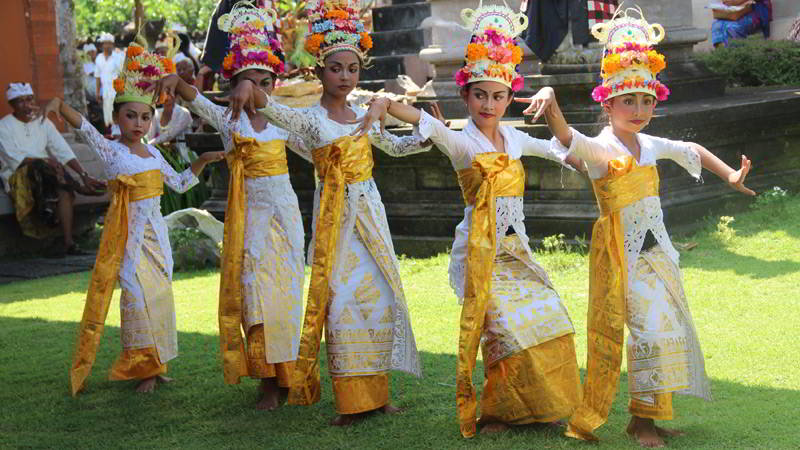

Tari Rejang
Tari Rejang. Secara umum kesenian tari Bali telah diklarifikasikan menjadi tari yang bersifat hiburan dan Tari Sakral atau Tari Wali yang difungsikan sebagai bagian dari ritual keagamaan.
Ketika merujuk pada zaman Bali Kuno, terdapat dua transformasi perihal kesenian tari, yang pertama adalah melalui guru-guru tua yang memberikan pelajaran secara personal.
Kemudian yang kedua adalah kategori yang berbau gaib, yakni transformasi ketika seorang penari hanya bertindak sebagai medium. Kategori ini sering ditemukan pada penari-penari suci atau yang belum akil balik.
Mereka mengalami proses kerawuhan – suatu ecstay, dan menari dalam keadaan kehilangan kesadaran saat menari Rejang Pendet atau tari Sang Hyang di pura-pura Hindu (Bandem, 1996:67).
Dalam Sejarahnya, Tari Rejang telah menjadi bagian dari upacara keagamaan masyarakat Bali sejak zaman pra-Hindu. Tari ini difungsikan sebagai persembahan suci untuk menyambut kedatangan dan menghibur para Dewa yang turun dari kahyangan.
Melalui puja mantra dan sesaji, para Dewa diundang turun dari kahyangan dan diyakini bersemayam pada benda-benda suci seperti Pratima yang biasanya ditempatkan di tempat-tempat suci atau pelinggih.
Tari ini biasa dipentaskan dalam upacara Dewa Yadnya seperti Odalan di pura-pura dalam kalangan Masyarakat Hindu. Di tarikan oleh para penari putri secara massal atau berkelompok baik pilihan maupun campuran dari berbagai usia.
Penari berbaris melingkari halaman pura atau pelinggih yang kadang kala dilakukan dengan berpegangan tangan. Gerakan tarinya sederhana dan lemah lembut namun progresif dan lincah. Di lakukan dengan khidmat, penuh rasa pengabdian pada Dewa-Dewi Hindu dan penuh penjiwaan.
<< Kembali